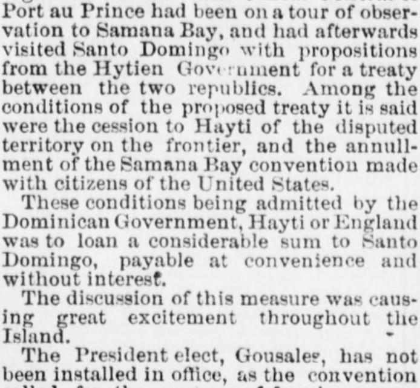
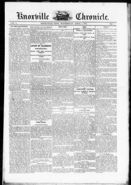

The President elect, Gousale?, has not been installed in office, asEl Presidente electo, González, no ha sido instalado en el cargo, pues
Knoxville Weekly Chronicle. Knoxville, Tenn., April 8, 1874. Page 1.Knoxville Weekly Chronicle. Knoxville, Tenn., 8 de abril de 1874. Página 1. View the originalVer el original


See the full pageVer la página completaThe Knoxville Weekly Chronicle reported that the Dominican provisional government declared the Samana Bay convention null and void after a special commission failed to reach an amicable settlement. In response, the commissioners protested the act as arbitrary and illegal, demanded arbitration, and announced plans to call upon the United States Government for protection against violent proceedings by Dominican authorities. Meanwhile, the island experienced excitement over a proposed loan from Hayti or England, and the installation of President-elect Gousale? remained delayed due to a constitutional convention's inability to agree on a new constitution.El Knoxville Weekly Chronicle informó que el gobierno provisional dominicano declaró nula y sin valor la convención de la bahía de Samaná luego de que una comisión especial no lograra llegar a un acuerdo amistoso. En respuesta, los comisionados protestaron por considerar la medida arbitraria e ilegal, demandaron arbitraje y anunciaron planes para recurrir al Gobierno de los Estados Unidos en busca de protección contra las actuaciones violentas de las autoridades dominicanas. Entretanto, la isla experimentaba agitación a causa de un propuesto empréstito de Haití o Inglaterra, y la toma de posesión del presidente electo González continuaba demorada por la incapacidad de una convención constituyente para acordar una nueva constitución.
FULL TEXT:TEXTO COMPLETO:
sentence to imprisonment in the penitentiary would be equivalent to a sentence to death.sentencia a prisión en la penitenciaría sería equivalente a una sentencia de muerte.
A Chance for a Diplomatic Muss.Una oportunidad para un enredo diplomático.
The steamship Tybee, from Santo Domingo on the 30th ult., brings the following news: The British Consul General of Port au Prince had been on a tour of observation to Samana Bay, and had afterwards visited Santo Domingo with propositions from the Hytien Government for a treaty between the two republics. Among the conditions of the proposed treaty it is said were the cession to Hayti of the disputed territory on the frontier, and the annulment of the Samana Bay convention made with citizens of the United States.El vapor Tybee, procedente de Santo Domingo el 30 del pasado, trae las siguientes noticias: El Cónsul General británico de Puerto Príncipe había estado en una gira de observación a la Bahía de Samaná, y después había visitado Santo Domingo con proposiciones del Gobierno haitiano para un tratado entre las dos repúblicas. Entre las condiciones del tratado propuesto, se dice, estaban la cesión a Haití del territorio disputado en la frontera, y la anulación de la convención de la Bahía de Samaná hecha con ciudadanos de los Estados Unidos.
These conditions being admitted by the Dominican Government, Hayti or England was to loan a considerable sum to Santo Domingo, payable at convenience and without interest.Admitidas estas condiciones por el Gobierno dominicano, Haití o Inglaterra prestaría una suma considerable a Santo Domingo, pagadera a conveniencia y sin interés.
The discussion of this measure was causing great excitement throughout the Island.La discusión de esta medida estaba causando gran excitación en toda la Isla.
The President elect, Gousales, has not been installed in office, as the convention called for the purpose of framing a new Constitution was still unable to agree upon the article thereof. The special commission of Samana Bay Company have not succeeded in obtaining an amicable settlement of the question pending between the Government and the Company, and the provisional government has declared the Samana Bay convention null and void. The commissioners have protested against this summary act as arbitrary and ellegal, and instigated by British and Haytien influence, and demand an arbitration upon the matters in dispute according to the terms of the convention. The Company will, in the meantime, call upon the United States Government for protection against any violent proceedings on the part the Dominican authorities.El Presidente electo, Gousales, no ha sido instalado en el cargo, pues la convención convocada con el propósito de redactar una nueva Constitución aún no podía ponerse de acuerdo sobre el artículo de la misma. La comisión especial de la Compañía de la Bahía de Samaná no ha logrado obtener un arreglo amistoso de la cuestión pendiente entre el Gobierno y la Compañía, y el gobierno provisional ha declarado la convención de la Bahía de Samaná nula y sin valor. Los comisionados han protestado contra este acto sumario como arbitrario e ilegal, e instigado por la influencia británica y haitiana, y demandan un arbitraje sobre los asuntos en disputa según los términos de la convención. La Compañía, mientras tanto, acudirá al Gobierno de los Estados Unidos por protección contra cualquier procedimiento violento por parte de las autoridades dominicanas.
Dr. Howe remains at Samana as acting Governor, while Samuels and Fobegs, and other members of the commission, returned to New York.El Dr. Howe permanece en Samaná como Gobernador interino, mientras Samuels y Fabens, y otros miembros de la comisión, regresaron a Nueva York.
This collection gathers the coverage of the Dominican Republic in the American press, in the order it was published.Esta colección reúne la cobertura de la República Dominicana en la prensa estadounidense, en el orden en que se publicaron.